May 2026
June 2026
July 2026
August 2026
September 2026
October 2026
November 2026
December 2026
July 2028
February 2030
June 2028
June 2027
January 2027
February 2026
October 2027
February 2027
September 2027
April 2027
March 2027
May 2027


WellnessWorld Sauna Forum

WellnessSauna Region Week

WellnessInternational Sauna Congress

WellnessAufguss WM

WellnessModern Classic Cup

WellnessUK Aufguss Championships

WellnessEuropean Sauna Marathon

Wellnessinterbad Sauna Forum

WellnessWorld Sauna Day

WellnessHelsinki Sauna Day

WellnessTampere Sauna Week

WellnessTuira Sauna Festival

WellnessSauna Herbal Cup

WellnessNordic Sauna Summit

WellnessBritish Sauna Week

WellnessJapan Sauna Fair

WellnessSauna & Wellness Expo Japan

WellnessAustralia Sauna & Cold Plunge Festival

WellnessNorth American Sauna Summit

WellnessCanadian Sauna Culture Weekend

TechnologyGoogle I/O

SportIIHF World Championship

SportFrench Open / Roland Garros

Motor sportIndianapolis 500

SportIndian Premier League Final

??? Motor sportCanadian Grand Prix

?? CultureCannes Film Festival

?? SportChampions League Final

?? CultureFes Festival of World Sacred Music

?? CultureHajj

?? SportState of Origin

?? FestivalVivid Sydney

TechnologyMicrosoft Build

TechnologyApple WWDC

Motor sportLe Mans 24 Hours

SportStanley Cup Final

SportNBA Finals

?? CultureBali Arts Festival

?? FestivalFesta Junina

?? SportFIFA World Cup

?? CultureInti Raymi

??? Motor sportMonaco Grand Prix

?? FestivalQueenstown Winter Festival

?? SportWimbledon

CultureComic-Con International 2026

FestivalWhite Sensation Amsterdam

FestivalTomorrowland 2026

??? Motor sportBritish Grand Prix

?? FestivalCalgary Stampede

?? SportCommonwealth Games

?? SportDurban July

?? NatureGreat Migration

?? SportTour de France

CultureGamescom 2026

?? SportBledisloe Cup

?? FestivalBuenos Aires Tango Festival

?? FestivalØya Festival

?? FestivalBurning Man

?? FestivalMedellín Flower Festival

?? SportSydney Marathon

?? SportUS Open Tennis

SportBerlin Marathon 2026

?? SportAFL Grand Final

?? SportAsian Games 2026

?? CultureBrazil Independence Day

?? CultureChile Fiestas Patrias

?? NatureHermanus Whale Festival

?? NatureKwita Izina

?? FestivalLake of Stars Festival

??? Motor sportMotoGP Japan

?? FestivalOktoberfest

?? CultureVenice Film Festival

SportWorld Series 2026

?? SportCape Town Marathon

?? CultureDay of the Dead

?? CultureDiwali 2026

?? CultureFiji Day

??? Motor sportMexico City Grand Prix

?? SportNRL Grand Final

?? FestivalOktoberfest Blumenau

??? Motor sportSingapore Grand Prix

??? Motor sportUnited States Grand Prix

?? CultureCairo International Film Festival

?? SportCopa Libertadores Final

??? Motor sportLas Vegas Grand Prix

?? CultureMarrakech Film Festival

?? SportMelbourne Cup

?? SportNew York City Marathon

??? Motor sportQatar Grand Prix

??? Motor sportSão Paulo Grand Prix

?? CultureSeoul Lantern Festival

?? CultureYi Peng & Loy Krathong

??? Motor sportAbu Dhabi Grand Prix

?? FestivalCalabar Carnival

?? FestivalJul i Vinterland

?? FestivalNew Year's Eve Copacabana

?? FestivalSydney New Year's Eve

SportSummer Olympics 2028

SportWinter Olympics 2030

SportCopa America

SportUEFA European Championship

FestivalGlastonbury Festival

SportFIFA Women’s World Cup

SportAfrica Cup of Nations

TechnologyCES

SportAustralian Open 2027

SportAFC Asian Cup 2027

SportICC T20 World Cup 2027

SportSuper Bowl

SportRugby World Cup 2027

SportCricket World Cup 2027

CultureGrammy Awards 2027

SportSix Nations Championship 2027

FestivalCoachella 2027

SportLondon Marathon 2027

SportBoston Marathon 2027

SportDubai World Cup 2027

FestivalUltra Music Festival 2027

CultureAcademy Awards / Oscars 2027

SportSony Open in Hawaii

SportThe American Express

SportFarmers Insurance Open

SportHilton Grand Vacations Tournament of Champions

SportLIV Golf Riyadh

SportWM Phoenix Open

SportAT&T Pebble Beach Pro-Am

SportLIV Golf Adelaide

SportGenesis Invitational

SportHonda LPGA Thailand

SportCognizant Classic

SportHSBC Women's World Championship

SportArnold Palmer Invitational

SportBlue Bay LPGA

SportLIV Golf Hong Kong

SportPuerto Rico Open

SportLIV Golf Singapore

SportThe Players Championship

SportFortinet Founders Cup

SportLIV Golf South Africa

SportValspar Championship

SportFord Championship presented by Wild Horse Pass

SportTexas Children's Houston Open

SportAramco Championship

SportValero Texas Open

SportMasters Tournament

SportJM Eagle LA Championship presented by Plastpro

SportLIV Golf Mexico City

SportRBC Heritage
SportThe Chevron Championship

SportZurich Classic of New Orleans

SportCadillac Championship

SportMexico Riviera Maya Open at Mayakoba

SportLIV Golf Virginia

SportMizuho Americas Open

SportONEflight Myrtle Beach Classic

SportTruist Championship

SportKroger Queen City Championship presented by P&G

SportPGA Championship

SportCJ Cup Byron Nelson

SportCharles Schwab Challenge

SportLIV Golf Korea

SportShopRite LPGA powered by Wakefern

SportLIV Golf Andalucia

SportMemorial Tournament

SportU.S. Women's Open presented by Ally

SportDow Championship

SportRBC Canadian Open

SportMeijer LPGA Classic for Simply Give

SportU.S. Open Golf

SportKPMG Women's PGA Championship

SportLIV Golf Louisiana

SportTravelers Championship

SportJohn Deere Classic

SportAmundi Evian Championship

SportGenesis Scottish Open

SportISCO Championship

SportCorales Puntacana Championship

SportThe Open Championship

Sport3M Open

SportISPS Handa Women's Scottish Open

SportLIV Golf UK

SportAIG Women's Open

SportRocket Classic

SportLIV Golf New York

SportWyndham Championship

SportFedEx St. Jude Championship

SportThe Standard Portland Classic

SportBMW Championship

SportCPKC Women's Open

SportLIV Golf Indianapolis

SportFM Championship

SportLIV Team Championship Michigan

SportTour Championship

SportBiltmore Championship Asheville

SportWalmart NW Arkansas Championship presented by P&G

SportBank of Utah Championship

SportLOTTE Championship presented by Hoakalei

SportBaycurrent Classic

SportBuick LPGA Shanghai

SportBMW Ladies Championship

SportButterfield Bermuda Championship

SportMaybank Championship

SportVidantaWorld Mexico Open

SportTOTO Japan Classic

SportWorld Wide Technology Championship

SportGood Good Championship

SportThe ANNIKA driven by Gainbridge at Pelican

SportCME Group Tour Championship

SportRSM Classic

SportKLPGA Oslo Ladies Open

SportRyder Cup 2027
CultureVenice Biennale Arte
CultureArt Basel
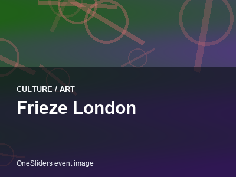
CultureFrieze London
CultureTEFAF Maastricht
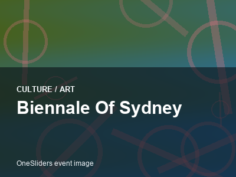
CultureBiennale of Sydney
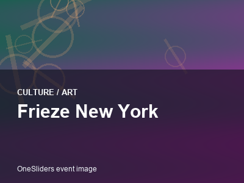
CultureFrieze New York
CultureGolden Globe Awards
CultureBAFTA Film Awards
CultureEmmy Awards
CultureTony Awards
CultureCesar Awards
CultureBrit Awards
CultureMTV Video Music Awards
CultureBET Awards
CultureRio Carnival
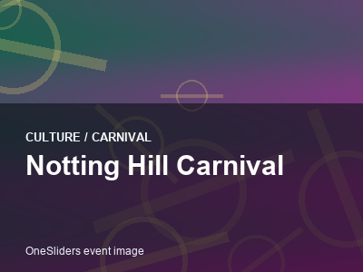
CultureNotting Hill Carnival
CultureVenice Carnival
CultureCarnival of Santa Cruz de Tenerife
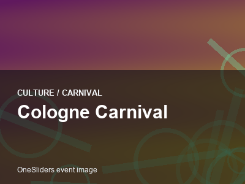
CultureCologne Carnival
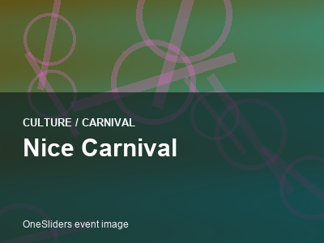
CultureNice Carnival
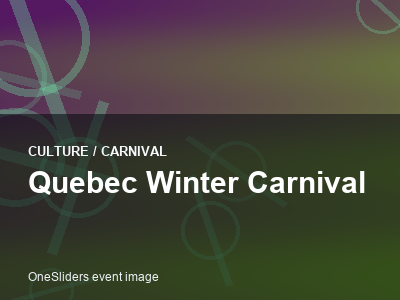
CultureQuebec Winter Carnival
CultureTrinidad Carnival
CultureParis Fashion Week
CultureMilan Fashion Week
CultureLondon Fashion Week
CultureNew York Fashion Week
CultureCopenhagen Fashion Week
CultureSeoul Fashion Week
CultureTokyo Fashion Week
CultureShanghai Fashion Week
CultureDubai Fashion Week
CultureBerlin International Film Festival
CultureToronto International Film Festival
CultureSundance Film Festival
CultureBusan International Film Festival
CultureLocarno Film Festival
CultureTribeca Festival
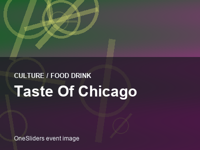
CultureTaste of Chicago
CultureSalon du Chocolat Paris
CultureMelbourne Food and Wine Festival
CultureDubai Food Festival
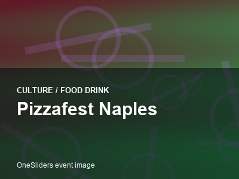
CulturePizzafest Naples
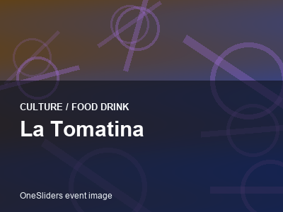
CultureLa Tomatina
CultureSingapore Food Festival
CultureSan Sebastian Gastronomika
CultureTokyo Game Show
CulturePAX East
CulturePAX West
CultureThe Game Awards
CultureChinaJoy
CultureBrasil Game Show
CultureParis Games Week
CultureDreamHack Dallas
CultureEGX London
CultureMontreux Jazz Festival
CultureNew Orleans Jazz and Heritage Festival
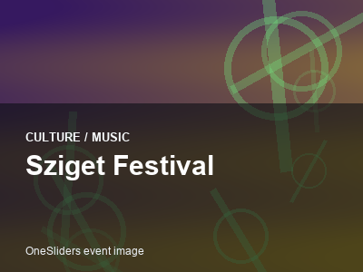
CultureSziget Festival
CultureRoskilde Festival
CultureNorth Sea Jazz Festival
CultureMawazine Festival
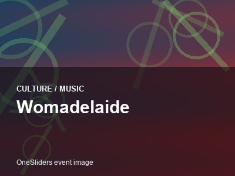
CultureWOMADelaide
CultureLollapalooza Chicago
CulturePrimavera Sound Barcelona
CultureSziget Festival Budapest
CultureRock in Rio
CultureRoskilde Festival
CultureFuji Rock Festival
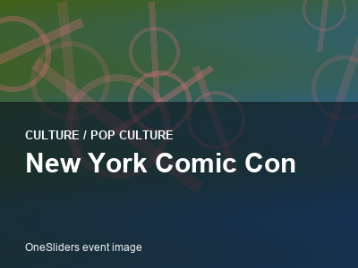
CultureNew York Comic Con
CultureMCM Comic Con London
CultureAnime Expo
CultureJapan Expo Paris
CultureCCXP Sao Paulo
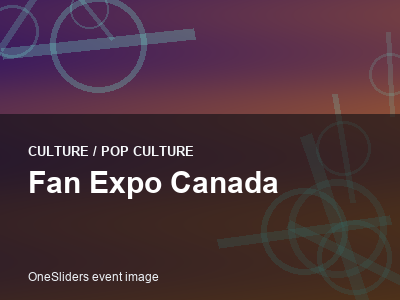
CultureFan Expo Canada
CultureDragon Con
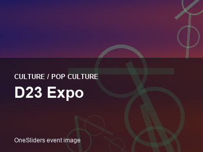
CultureD23 Expo
CultureLucca Comics and Games
CultureKumbh Mela
CultureEaster in Jerusalem
CultureSemana Santa Seville
CultureThaipusam
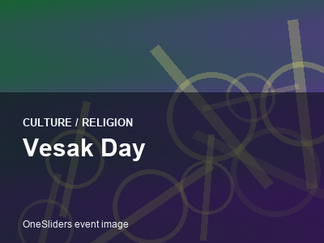
CultureVesak Day
CultureObon Festival
CultureRamadan Nights Dubai
CultureChristmas Midnight Mass Vatican
CultureSXSW Interactive
CultureWeb Summit Lisbon
CultureVivaTech Paris
CultureSlush Helsinki
CultureLondon Tech Week
CultureTechCrunch Disrupt
CultureGITEX Global
CultureRISE Asia
CultureDublin Tech Summit
CultureHoli Festival
CultureChinese New Year
CultureSongkran Festival
CultureUp Helly Aa
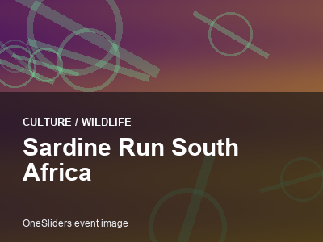
CultureSardine Run South Africa
CultureMonarch Butterfly Migration
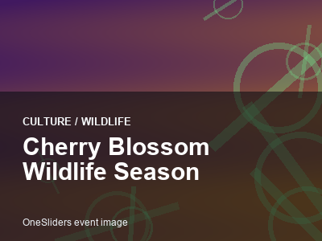
CultureCherry Blossom Wildlife Season
CultureGreat Barrier Reef Coral Spawning
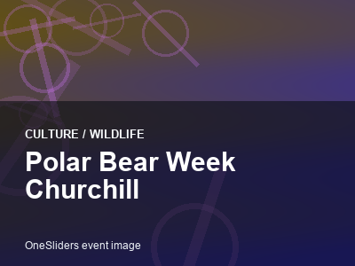
CulturePolar Bear Week Churchill
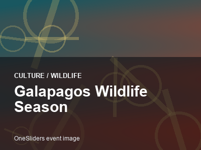
CultureGalapagos Wildlife Season
CultureMasai Mara Calving Season
CultureSapporo Snow Festival
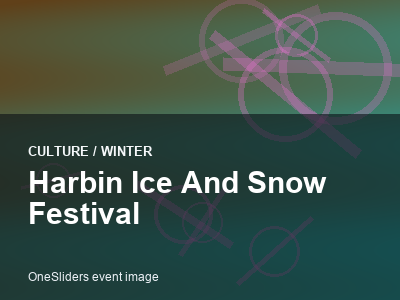
CultureHarbin Ice and Snow Festival
CultureQuebec Winter Carnival
CultureTromso Northern Lights Festival
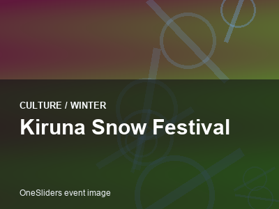
CultureKiruna Snow Festival
CultureIce Magic Lake Louise
CultureCarnaval de Quebec Night Parade
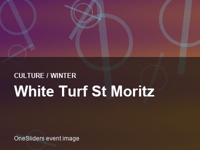
CultureWhite Turf St Moritz
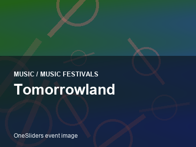
MusicTomorrowland
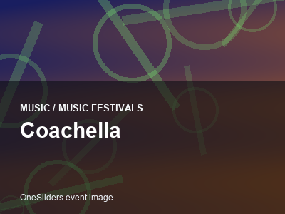
MusicCoachella
MusicUltra Music Festival
MusicPrimavera Sound
MusicFuji Rock Festival
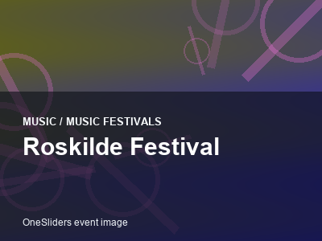
MusicRoskilde Festival
MusicMontreux Jazz Festival
MusicSanremo Music Festival
MusicMelodifestivalen
MusicAmerican Song Contest
MusicJunior Eurovision Song Contest
MusicBenidorm Fest
MusicFestival da Cancao
MusicUna Voce per San Marino
MusicThe Voice Finale
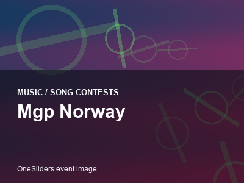
MusicMGP Norway
MusicWOMAD Charlton Park
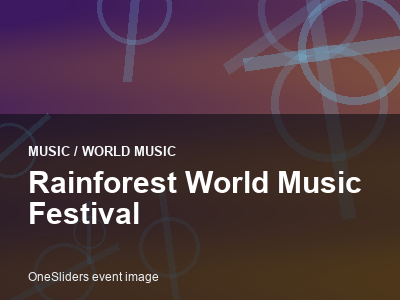
MusicRainforest World Music Festival
MusicSauti za Busara
MusicFestival au Desert
MusicEssaouira Gnaoua Festival
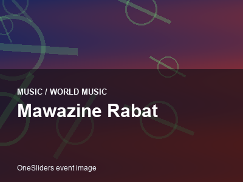
MusicMawazine Rabat
MusicCeltic Connections
MusicUdaipur World Music Festival
MusicGlobalFEST New York
SportCollege Football Playoff National Championship
SportNFL Draft
SportPro Bowl Games
SportArmy Navy Game
SportRose Bowl Game
SportCotton Bowl Classic
SportOrange Bowl
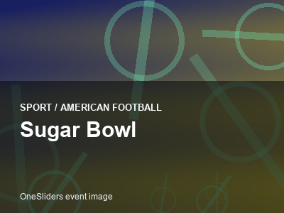
SportSugar Bowl
SportNFL Kickoff Game
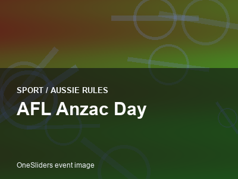
SportAFL Anzac Day
SportAFL Dreamtime at the G
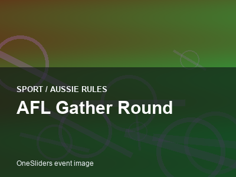
SportAFL Gather Round
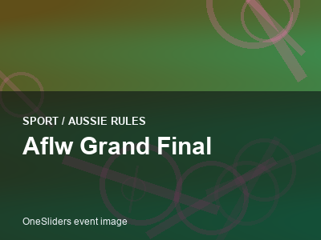
SportAFLW Grand Final
SportAFL Preliminary Finals
SportAFL Brownlow Medal
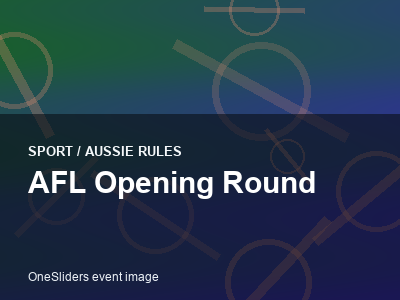
SportAFL Opening Round
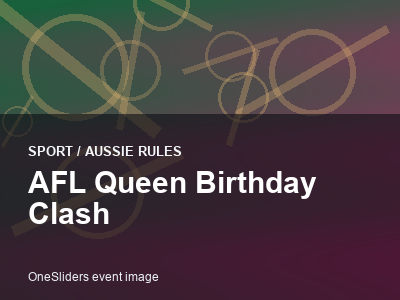
SportAFL Queen Birthday Clash
SportAFL International Rules Series
SportMLB All-Star Game
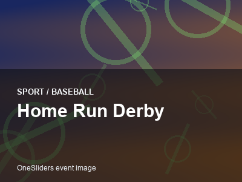
SportHome Run Derby
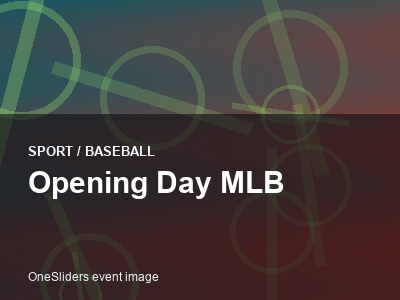
SportOpening Day MLB
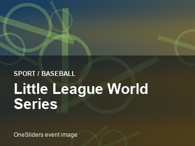
SportLittle League World Series
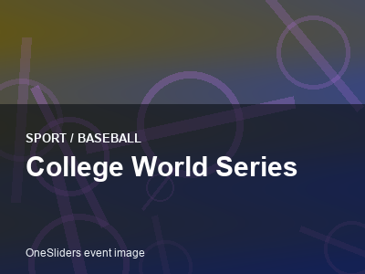
SportCollege World Series
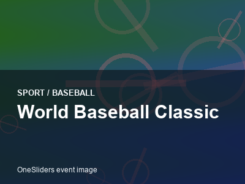
SportWorld Baseball Classic
SportJapan Series
SportKorean Series
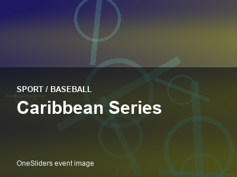
SportCaribbean Series
SportNBA All-Star Game
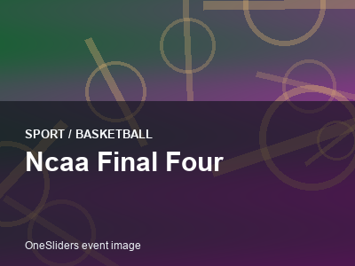
SportNCAA Final Four
SportWNBA Finals
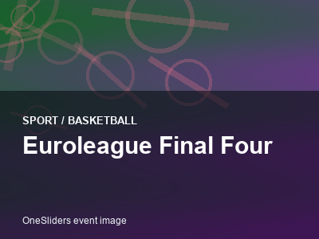
SportEuroLeague Final Four
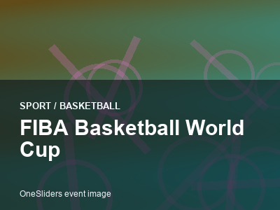
SportFIBA Basketball World Cup
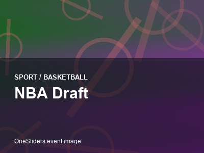
SportNBA Draft
SportBasketball Africa League Finals
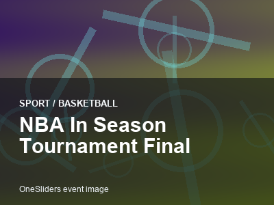
SportNBA In-Season Tournament Final
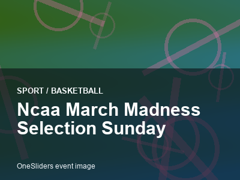
SportNCAA March Madness Selection Sunday
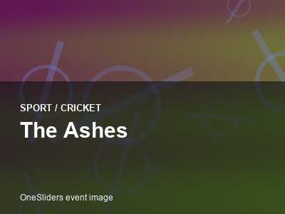
SportThe Ashes
SportICC Champions Trophy
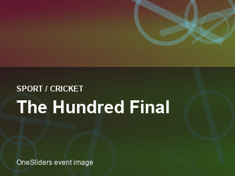
SportThe Hundred Final
SportBig Bash League Final
SportPakistan Super League Final
SportWomen Cricket World Cup Final
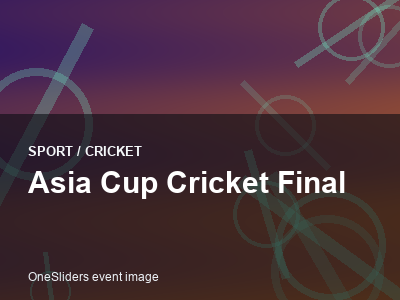
SportAsia Cup Cricket Final
SportGiro d Italia
SportVuelta a Espana
SportParis Roubaix
SportTour of Flanders
SportUCI Road World Championships
SportMilan San Remo
SportLiege Bastogne Liege
SportStrade Bianche
SportAmstel Gold Race
SportUEFA Europa League Final
SportUEFA Conference League Final
SportKentucky Derby
SportRoyal Ascot
SportPrix de l Arc de Triomphe
SportGrand National
SportBreeders Cup
SportCheltenham Gold Cup
SportJapan Cup
SportWinter Classic
SportNHL All-Star Weekend
SportSpengler Cup
SportWorld Junior Ice Hockey Championship
SportChampions Hockey League Final
SportKHL Gagarin Cup Final
SportFour Nations Face-Off
SportMemorial Cup
SportChicago Marathon
SportTokyo Marathon
SportNew York City Marathon
SportSydney Marathon
SportParis Marathon
SportAmsterdam Marathon
SportValencia Marathon
SportQatar MotoGP
SportSpanish MotoGP
SportItalian MotoGP
SportDutch TT Assen
SportBritish MotoGP
SportAustralian MotoGP
SportGerman MotoGP
SportFrench MotoGP
SportMalaysian MotoGP
SportDaytona 500
SportNASCAR Championship Race
SportBathurst 1000
SportDakar Rally
SportRally Monte Carlo
SportIsle of Man TT
SportGoodwood Festival of Speed
SportSebring 12 Hours
SportEuropean Championships
SportWorld University Games
SportInvictus Games
SportPan American Games
SportAfrican Games
SportYouth Olympic Games
SportSuper Rugby Final
SportPremiership Rugby Final
SportUnited Rugby Championship Final
SportEuropean Rugby Champions Cup Final
SportRugby League World Cup Final
SportGreat North Run
SportComrades Marathon
SportTwo Oceans Marathon
SportCity2Surf Sydney
SportGreat Ethiopian Run
SportBolder Boulder
SportPeachtree Road Race
SportATP Finals
SportWTA Finals
SportDavis Cup Finals
SportBillie Jean King Cup Finals
SportIndian Wells Masters
SportMiami Open Tennis

TechnologyApple September Event
TechnologySamsung Galaxy Unpacked
TechnologyGoogle Pixel Launch
TechnologyIFA Berlin
TechnologyMobile World Congress
TechnologyComputex Taipei
TechnologyNintendo Direct Showcase
TechnologySony State of Play
TechnologyMicrosoft Surface Event
TechnologyGitHub Universe
TechnologyNVIDIA GTC
TechnologyAWS re:Invent
TechnologyMeta Connect
TechnologySalesforce Dreamforce
TechnologyRed Hat Summit
TechnologyDockerCon